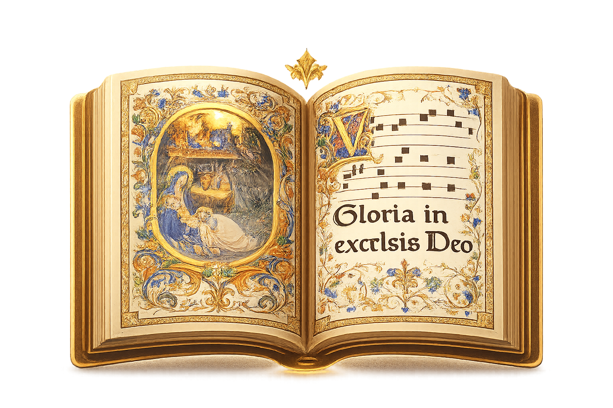

Festas e Solenidades · 12 de outubro
Seus filhos
Comunhão · Solenidade de Nossa Senhora Aparecida

Comunhão
YouTubeSeus filhos
Assista ao vídeo para conhecer e preparar o canto.

Para o seu ministério de música
Partitura
Partitura gratuita; contribuição opcional.
- Letra
- Missal Romano
- Música
- Douglas Assumpção
- Referência bíblica do refrão
- Cf. Pr 31,28.15
- Salmodia da partitura
- Sl 142(143),1.8.10–11
O canto à luz dos santos
Seus filhos: o cuidado materno e o alimento da Comunhão
O canto de Comunhão da Solenidade de Nossa Senhora Aparecida reúne o louvor dos filhos e o cuidado da mãe que alimenta. Com Santo Agostinho, Santo Irineu e Santo Tomás de Aquino, vamos aprofundar o sentido dessa gratidão, da obediência da fé e da vida eucarística.
Os fundamentos estão em escritos autênticos de santos, identificados ao final. As relações com esta composição são aplicações espirituais desta matéria.
1. “Seus filhos”: o louvor nasce de um cuidado que veio antes
Na partitura de Comunhão, os filhos se levantam para proclamar a mãe bem-aventurada; ela, por sua vez, se levanta antes da aurora para alimentar. O texto reúne imagens de Provérbios 31,28 e 31,15. No contexto bíblico, é o elogio da mulher diligente que cuida de sua casa. A leitura mariana acolhe essa imagem como expressão de solicitude materna; não transforma o capítulo inteiro em relato da vida de Maria. Confira Pr 31,10–31.
O encontro desses dois movimentos sugere uma meditação: antes de os filhos reconhecerem o cuidado, alguém já velava por eles. Nossa gratidão chega depois do dom. Também na vida espiritual, começamos frequentemente por descobrir que fomos amados quando ainda não sabíamos agradecer. Cantar pode ser esse despertar: perceber o bem recebido e responder com a própria vida.
A salmodia da partitura acrescenta pedidos de escuta, direção e renovação, correspondentes ao Salmo 142(143),1.8.10–11. Assim, o canto passa do louvor à mãe para a súplica dirigida a Deus. A assembleia pede que o Senhor lhe ensine a cumprir sua vontade: o reconhecimento filial amadurece em disponibilidade.
Texto e seleção dos versículos conferidos no PDF “Seus filhos — Comunhão — Órgão”. A dupla numeração do salmo corresponde às tradições greco-latina e hebraica.
2. “E nossa”: uma maternidade que tem a forma da caridade
Santo Agostinho, em A santa virgindade, 6, distingue a maternidade corporal de Maria em relação a Cristo e sua maternidade espiritual em relação aos fiéis. Ela cooperou pela caridade para que nascessem na Igreja os membros daquele de quem é mãe segundo a carne. No mesmo trecho, Agostinho recorda que Maria também pertence aos que creem no Salvador. Sua grandeza permanece inteiramente ligada a Ele. Leia o n. 6.
Essa relação esclarece o “nossa” do canto: somos acolhidos numa comunhão cuja Cabeça é Cristo. A devoção mariana nos compromete com seus outros filhos. Há uma pergunta exigente para quem canta: consigo reconhecer como irmão aquele com quem tenho dificuldade de conviver?
Já no n. 3, Agostinho ensina que a felicidade de Maria envolve sua fé e sua obediência à Palavra. A proximidade corporal, isolada da acolhida interior, não explicaria sua bem-aventurança. Honrá-la nos convida a essa escuta: guardar a Palavra até que ela alcance nossas escolhas. A santa virgindade, 3.
3. Santo Irineu: a confiança que começa a desatar a história
Em Contra as heresias, III, 22, 4, Santo Irineu aproxima Eva e Maria. À incredulidade e à desobediência de Eva corresponde a fé obediente de Maria. Ele descreve essa relação pela imagem de um nó desfeito: a obediência da Virgem participa do caminho de salvação realizado por Cristo. O argumento está num capítulo que defende a realidade da carne recebida pelo Verbo. A resposta de Maria integra uma história real de redenção. Livro III, capítulo 22, especialmente 1 e 4.
Podemos aplicar essa imagem ao pedido do salmo cantado em “Seus filhos”: aprender a vontade de Deus. Existem situações que apertamos cada vez mais pela insistência em dominar tudo. A confiança permite começar por um ato fiel: reconhecer uma falta, cumprir uma responsabilidade, escutar antes de responder. O consentimento de Maria ilumina a fecundidade dessas pequenas obediências, que entregam a Deus o futuro sem abandonar o dever de hoje.
4. O alimento da Comunhão e a vida que ele sustenta
A imagem materna do alimento, em “Seus filhos”, permite uma aproximação espiritual com a mesa eucarística. É uma aplicação meditativa: Provérbios 31 não é, em seu sentido literal, uma descrição da instituição da Eucaristia. No sacramento, é Cristo quem se dá e comunica a vida da graça.
Santo Tomás explica que a Eucaristia sustenta, faz crescer, restaura e alegra a vida espiritual, de modo análogo ao alimento corporal. Sua eficácia tem origem em Cristo e em sua Paixão. Receber esse alimento é ser fortalecido para viver da união com Deus. Suma Teológica, III, q. 79, a. 1.
Ao meditar essa doutrina, podemos reconhecer nossa necessidade de perseverança. Nem sempre percebemos imediatamente o crescimento interior. Há frutos que amadurecem na fidelidade silenciosa: suportar uma contrariedade sem ferir, vencer a indiferença, voltar a rezar depois de um período difícil. A ação de graças pode incluir o pedido de que o dom recebido alcance essas regiões da vida.
Santo Agostinho, comentando João 6, associa a Eucaristia à unidade do Corpo de Cristo e à caridade. No mesmo tratado, exige sinceridade no perdão pedido antes de aproximar-se do altar. A comunhão com o Senhor compromete a relação com os seus membros. Tratados sobre o Evangelho de João, XXVI, 11 e 13.
Essa é uma aplicação particularmente fecunda ao canto em comunidade: várias vozes precisam aprender a escutar-se. O ensaio pode preparar também nossa convivência. Quando cedemos espaço ao outro, acolhemos quem aprende mais devagar e procuramos a reconciliação, começamos a dar expressão cotidiana à unidade que celebramos.
5. Preparar as palavras e deixá-las continuar depois da música
Para “Seus filhos”, leia o refrão e os versículos antes de cantar. Perceba a passagem do reconhecimento da mãe à oração dirigida ao Senhor. Combine respirações que preservem o sentido das frases e dê à salmodia tempo para ser compreendida.
Depois do canto, escolha um gesto possível: visitar alguém esquecido, oferecer ajuda a uma família, procurar a pessoa com quem a relação se tornou difícil. A profundidade da oração pode ser reconhecida também na atenção que ela desperta. Que aqueles por quem pedimos encontrem em nós alguém disposto a cuidar.
As orientações musicais e as propostas de vida são aplicações editoriais, não prescrições atribuídas aos santos.
Uma oração depois do canto
Senhor Jesus, Filho eterno do Pai e filho de Maria segundo a carne, ensinai-nos a acolher vossa Palavra. Que a gratidão à vossa Mãe desperte em nós a confiança, a obediência e o cuidado com nossos irmãos. Alimentados por vós, dai-nos perseverança para servir, humildade para pedir perdão e atenção aos que passam despercebidos. Fazei de nossa voz e de nossa vida uma resposta ao vosso amor. Amém.
Oração composta para esta matéria; não é uma citação de santo.
Cantos da solenidade
Volte à página da Solenidade de Nossa Senhora Aparecida para acessar o repertório desta celebração.
← Voltar à solenidade